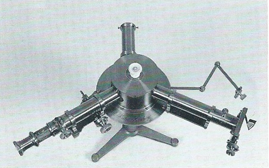

Spettroscopio
Scuola di provenienza: Istituto Agrario "F. De Sanctis", Avellino
Settore: Ottica
Costruttori: A. Kruss, Amburgo, Germania
Materiali: Ferro, ottone
Accessori: Nessuno
Stato di conservazione: Buono
Descrizione: Strumento atto a studiare lo spettro, cioè la scissione in colori di una radiazione proveniente da una fonte luminosa. Tra i vari spettroscopi esistenti, quello in esame è detto di “BUNSEN”. È costituito da un cannocchiale, un collimatore, un micrometro, montati su di un piede comune ed i loro assi convergono verso le facce di un prisma. La radiazione da analizzare, emessa da una sorgente posta di fronte alla fessura, dopo aver attraversato la lente, giunge su una faccia del prisma.